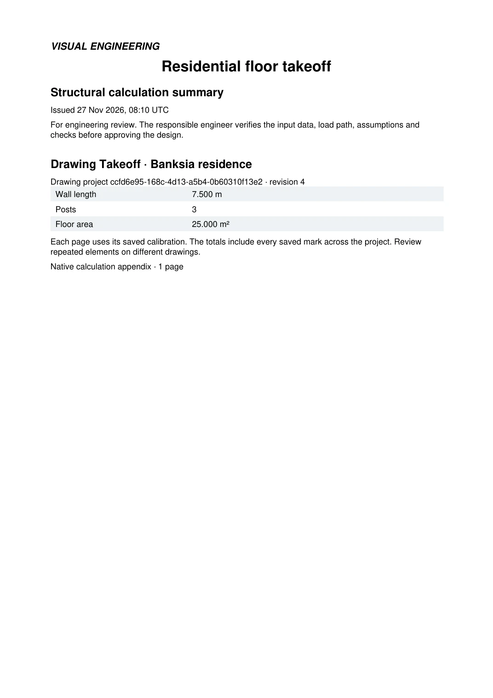

Residential floor quantities
The living room measures 20 m² on the ground floor plan. The upstairs study adds 5 m². The ground and upper floor drawings use separate reference dimensions of 10 m and 5 m.
The issued project record identifies the two drawing revisions behind the 25 m² of floor, 7.5 m of wall and three marked posts. Quantities refer to the marked elements in this worked example.
Loading the report…
